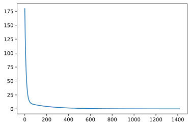

Gradient Descent
Jacky Baltes
National Taiwan Normal University
Taipei, Taiwan
jacky.baltes@ntnu.edu.tw

Gradient Descent
Complexity of calculating the inverse of a matrix is n**3.
This means it is expensive for models with lots of parameters. For example, a model with 1000 parameters will require 10**9 operations.
Gradient descent is often faster in those situations by calculating an iterative approximation
Gradient Descent Introduction
Think of the regression problem as an optimization problem. Our goal is to minimize the error over the training set
Least squared error function
\[ err(w) = \frac{1}{2} \sum_{i} ( y_i - x_i \cdot w )^2 \]This is usually called the loss function
Gradient Descent Introduction
The loss function is a multi-variate function of the weights \( ( w1, w2, ..., w_m ) \) , where \( m \) is the size of the model
We want find \( w \), so that the error function is minimized. So we want to find the minimum of the error function
For functions with a single variable: minimize a function by calculating the derivative of the function and find the point where it is 0
Gradient
For multi-variate functions, we need to calculate the partial derivatives
\[ \frac{\delta err}{\delta w_1}, \frac{\delta err}{ \delta w_2}, ..., \frac{\delta err}{ \delta w_m} \]\( \frac{\delta err}{\delta w_i} \) is the derivative of function \( err(w_1, w_2, ..., w_m) \) where \( w_j (j \neq i ) \) is constant
The gradient of a multi-variate function is indicated by \( \nabla err \) and defined as
\[ \nabla err(w) = [\frac{\delta err}{\delta w_1}, \frac{\delta err}{ \delta w_2}, ..., \frac{\delta err}{ \delta w_m} ] \]
Start with the error function
\[ err(w) = \frac{1}{2} \sum_{i} ( y_i - x_i \cdot w )^2 \]Replace the dot product
\[ err(w) = \frac{1}{2} \sum_{i=1}^{n} ( y_i - \sum_{j=1}^{m} x_{i,j} w_{j} )^2 \]
Chain Rule
The Chain rule of Calculus specifies that h(x) = f(g(x)), then h'(x) = f'(g(x)) * g'(x)
For our error function, what f and what is g?
f = \( (....)^2 \) and g = \( y_i - \sum_{j=1}^{m} x_{i,j} w_{j} \)
\( f' = 2*( ... ) \), and g' = \( \)
A Small Example
n = 3, m = 2
X = [ [ 1, 1 ], [1, 2], [ 1, 4 ] ]
Y = [ 5, 7, 11 ]
\[ \frac{ \delta err(w) }{ \delta w_1 } = \frac{ \delta }{ \delta w_1 } \frac{1}{2} \sum_{i=1}^{n} ( y_i - \sum_{j=1}^{m} x_{i,j} w_{j} )^2 \]
\[ g_{w0} = ( y_i - \sum_{j=1}^{m} x_{i,j} w_{j} ) \\ g_{w0} = ( y_i - x_{i,0} w_{0} - x_{i,1} w_{1}) \\ \]
For \( g_{w0} \), \( w_0 \) is a parameters, all other w's are constants
Hence, \( g_{w0} = - x_{i,0} \) and \( g_{w1} = - x_{i,1} \)
Gradient Descent
\[ \frac{ \delta err }{ \delta w_1 } = \frac{1}{2} \sum_{i=1}^{n} 2 ( y_i - \sum_{j=1}^{m} x_{i,j} w_{j} ) ( - x_{i,1} ) \\ \]
Cancelling the 2 and generalizing to all j's
\[ \frac{ \delta err }{ \delta w_j } = \sum_{i=1}^{n} ( y_i - \sum_{j=1}^{m} x_{i,j} w_{j} ) ( - x_{i,j} ) \]
Bias Term
Remember that I setup the learning problem by adding a (1) column to the training data to correspond to a constant bias
Some people prefer to setup their model by making an explicit bias term
In this case, the error function looks like this
\[ \frac{ \delta err(w) }{ \delta w_1 } = \frac{ \delta }{ \delta w_1 } \frac{1}{2} \sum_{i=1}^{n} ( y_i - w_1 - \sum_{j=2}^{m} x_{i,j} w_{j} )^2 \]and we need two different formulas to calculate the gradient. For \( w_1 \), the partial derivative is
\[ \frac{ \delta err }{ \delta w_j } = \sum_{i=1}^{n} ( y_i - w_1 - \sum_{j=1}^{m} x_{i,j} w_{j} ) ( - 1 ) \]For the other parameters, the formula stays the same
random.seed(20220507)
np.random.seed(20220507)
def createSampleData( NModel, Pmin, Pmax, NInstances, sigma ):
model = -0.5 + np.random.random(NModel)
x = Pmin + np.random.random( (NInstances) ) * (Pmax - Pmin)
x.sort()
Xs = np.zeros( (NInstances, NModel) )
for i in range(NModel):
Xs[:,i] = x ** i
Ys = Xs.dot(model)
if (sigma > 0):
Ys = Ys + np.random.normal(0.0, sigma, NInstances )
return Xs, Ys, model
def model_to_string( model ):
s = []
for i in range(len(model) ):
if i == 0:
st = "{0:.2f}".format(model[i] )
elif i == 1:
st = "{0:.2f}x".format(model[i])
else:
st = "{0:.2f}x^{1}".format(model[i], i )
if ( i < len(model) - 1 ) and ( model[i] > 0 ):
st = "+" + st
s.append( st )
return " ".join( reversed( s ) )
NModel = 4
Pmin, Pmax = -5,5
NInstances = 50
sigma = 10
Xs, Ys, model = createSampleData( NModel, Pmin, Pmax, NInstances, sigma )
# Gradient descent
NModel = 3
Pmin, Pmax = -5,5
NInstances = 50
sigma = 10
Xs, Ys, model = createSampleData( NModel, Pmin, Pmax, NInstances, 0.0 )
xm = np.linspace( Pmin, Pmax, 100 )
xModel = np.zeros( (len(xm), len(model) ) )
for i in range(len(model)):
xModel[:,i] = xm ** i
yModel = xModel.dot(model)
gModel = np.ones( NModel )
NSteps = 20000
alpha = 0.0001
errors = []
for step in range( NSteps ):
err = 1/2 * sum( ( Ys - Xs.dot( gModel ) ) ** 2 )
errors.append( err )
grad = np.zeros( NModel )
for i in range( NModel ):
grad[i] = sum( ( Ys - Xs.dot( gModel ) ) * - Xs[:,i] )
gModel = gModel - alpha * grad
# if ( step % 100 == 0 ):
# print(model)
# print(gModel)
# print(err)
# print(grad)
if err < 0.01:
break
fig = plt.figure()
ax = fig.add_subplot(1,1,1)
ax.plot( errors[10:], label="Error")
err = addJBFigure("err", 0, 0, fig )
plt.close()
Plot of Error Function

Gradient Descent
The model that minimizes the error is approached iteratively using small steps
The parameter $$ 0 < \alpha \leq 1 $$ is often called the learning rate and controls the size of the steps in the approach.
If α is too small, then it will take a long time to learn
If α is too large, then the gradient descent algorithm will oscillate around the minimal error model